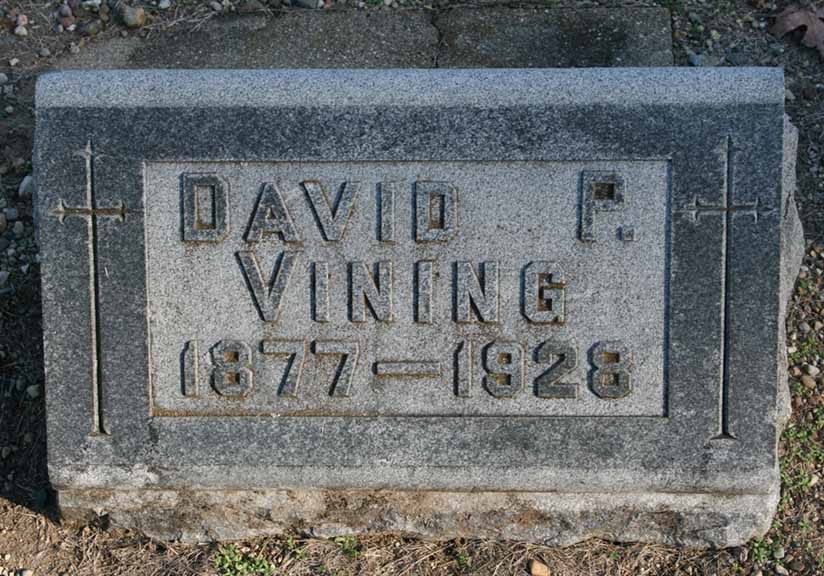
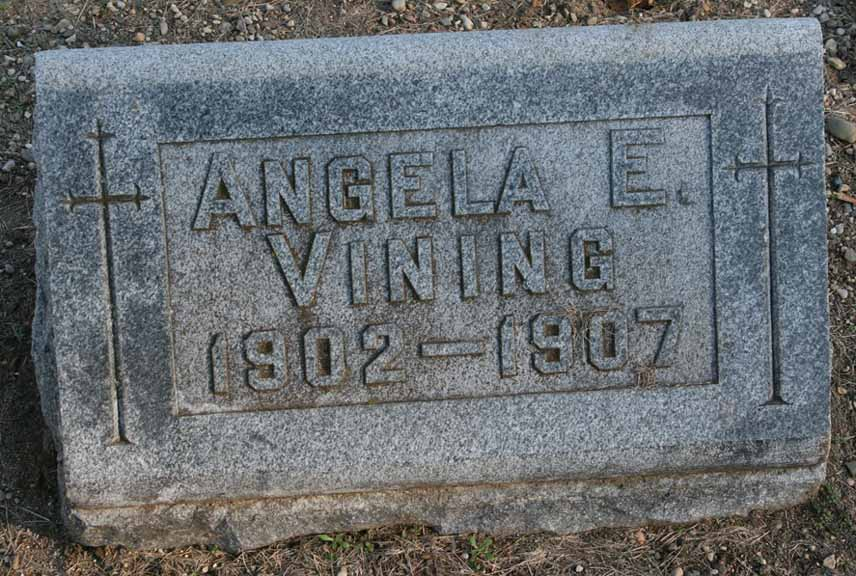

Census Data
| 1910 | 1920 | 1930 | 1940 | |
| Day Preston Vining | 33 | 43 | dead | |
| Margaret Irene (McVey) Vining | 33 | 43 | 53 | ? |
| Angela Evelyn Vining | dead | |||
| Bernice Marjorie Vining | 1 y., [?] m. | 11 | [living? in separate household] | |
| Victor Paul Vining | 0 m. | 9 | 20 | ? |
| Hubert Lawrence Vining | 7 | 17 | ? | |
| Charles Franklin Vining | 4 y., 4 m. | 14 | ? | |
| Robert Eugene Vining | 9 | ? |


Death Data
Gravestones of Day Preston Vining (nicknamed David) and daughter Angela Evelyn Vining, in St. John's Catholic Cemetery, Jackson, Michigan:
